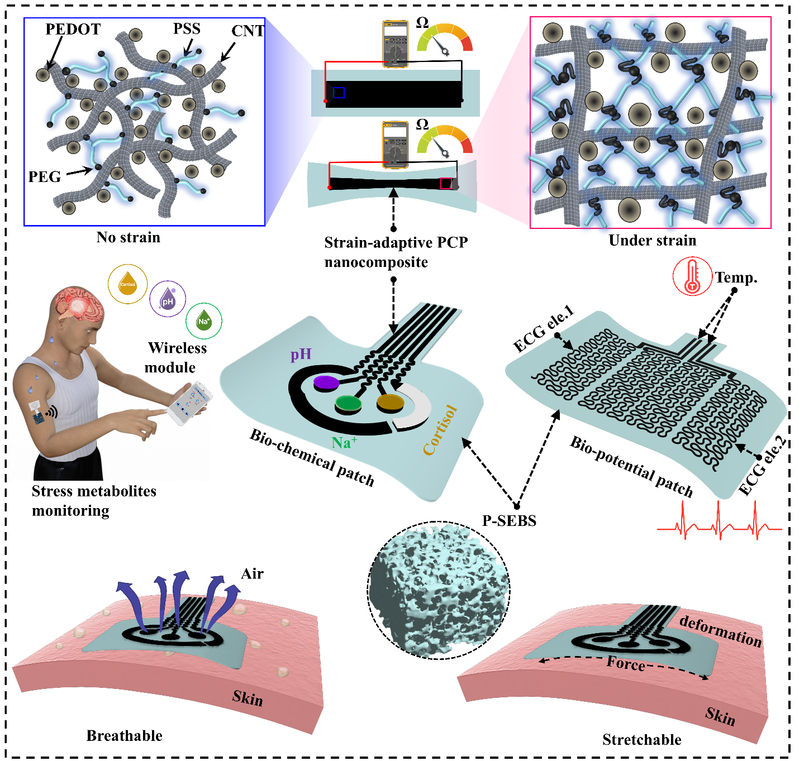
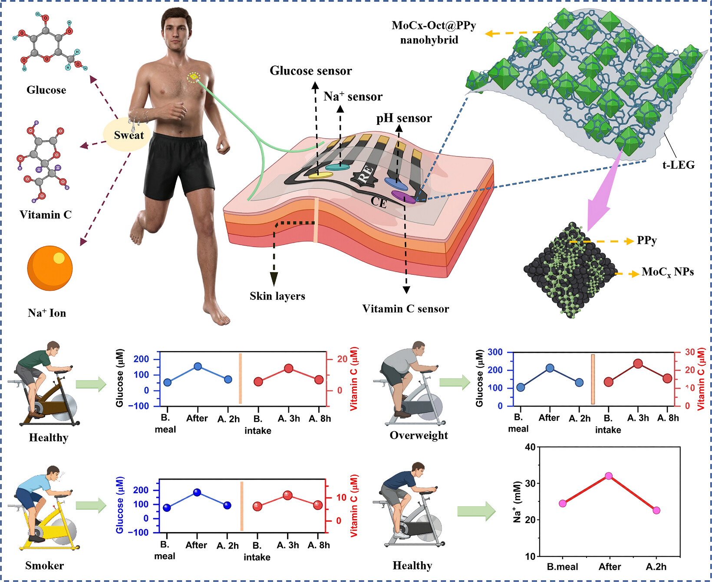

Kwangwoon University
MS integrated PhD in Electronic Engineering
I am an MS integrated PhD student in Electronic Engineering at Kwangwoon University, Seoul, Korea, with a strong background in Textile Engineering. I earned my Bachelor of Science in Fabric Engineering from Bangladesh University of Textiles (BUTEX) in November 2024. My research interests focus on smart textiles, wearable sensors, and flexible electronics, with particular expertise in the development of textile-based resistive and capacitive pressure, touch, and strain sensors for human–machine interaction and healthcare applications. I bring experience in interdisciplinary collaboration and a dedication to translating research concepts into practical, impactful innovations.
My research interests include Smart Textiles, Flexible Electronics, development of Wearable Sensors, and Bioelectronics. I am also interested in Internet of Things and Machine Learning. My goal is to develop smart flexible sensors that can monitor human motion and vital body signals by leveraging Machine Learning.
MS integrated PhD in Electronic Engineering
Bachelor of Science in Fabric Engineering
Smart & Functional Textile Lab
Department of Fabric Engineering, BUTEX
Worked on the development of textile-based wearable sensors for healthcare and robotics applications.
Access Computing Summer Program (ACSP) 2024
Mentor: Prof. Yiyue Luo (University of Washington)
Project: Design and Fabrication Toolkit for Ubiquitous Tactile Interface
Central R&D, Masco Group

Composites Part B: Engineering, Aug. 2026.
Read paper →
Advanced Functional Materials, Jul. 2026.
Read paper →
Nano Energy, Jul. 2026.
Read paper →
Micro and Nano-Systems (KMEMS) Conference, Jeju, Mar. 2026.
★ Excellent Poster Presentation Award
Poster
Advanced Engineering Materials, Dec. 2025.
Read paper →
SDG 12 and Global Fashion Textiles Production. Springer, Singapore.
Read chapter →
Journal of Engineered Fibers and Fabrics, Mar. 2025.
Read paper →
Journal of Industrial Textiles, vol. 54, Aug. 2024.
Read paper →